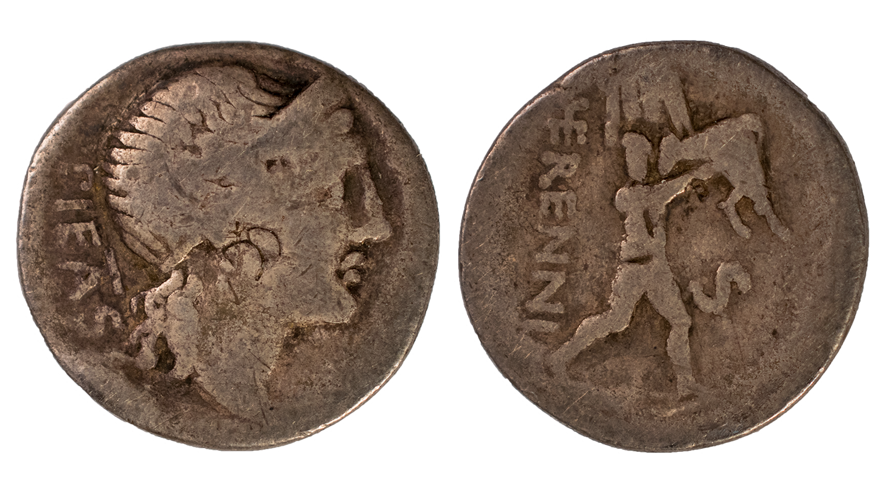

Coins of the Wilcox Collection
[ Under Construction ]
WC 0005
- Date
- 91 BCE
- Manufacture
- Struck
- Material
- AR
- Denomination
- Denarius
- Mint
- N/A
- Region
- N/A
- Obverse
- Female head of r.
- Obverse Inscription
- PIETAS
- Reverse
- Young man carrying father on shoulders
- Reverse Inscription
- HERENNI , S.[C]
